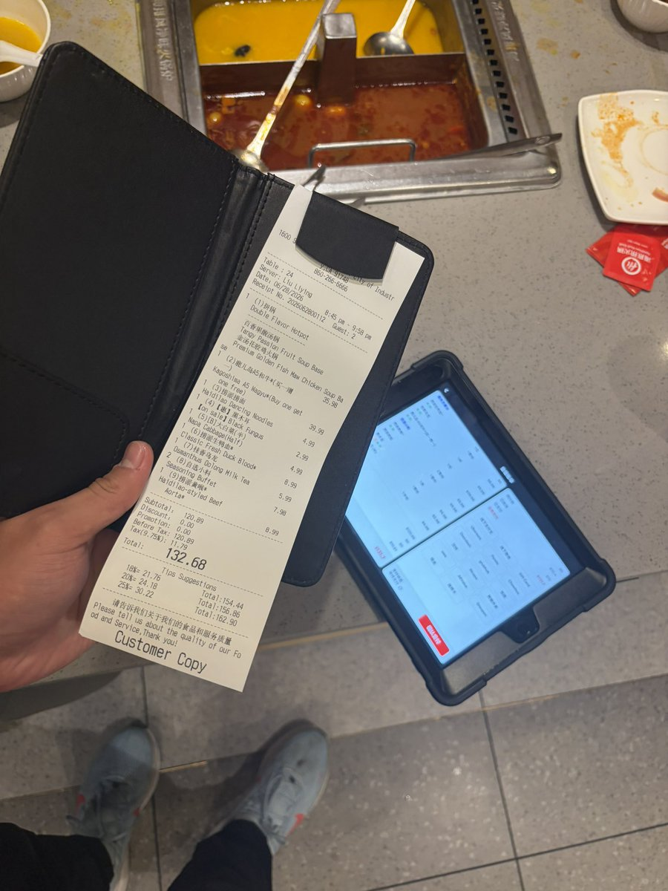
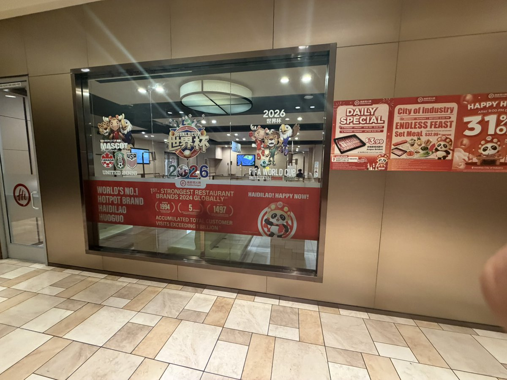
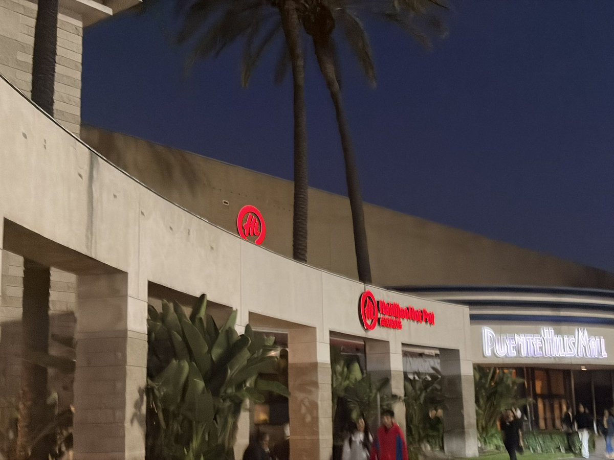
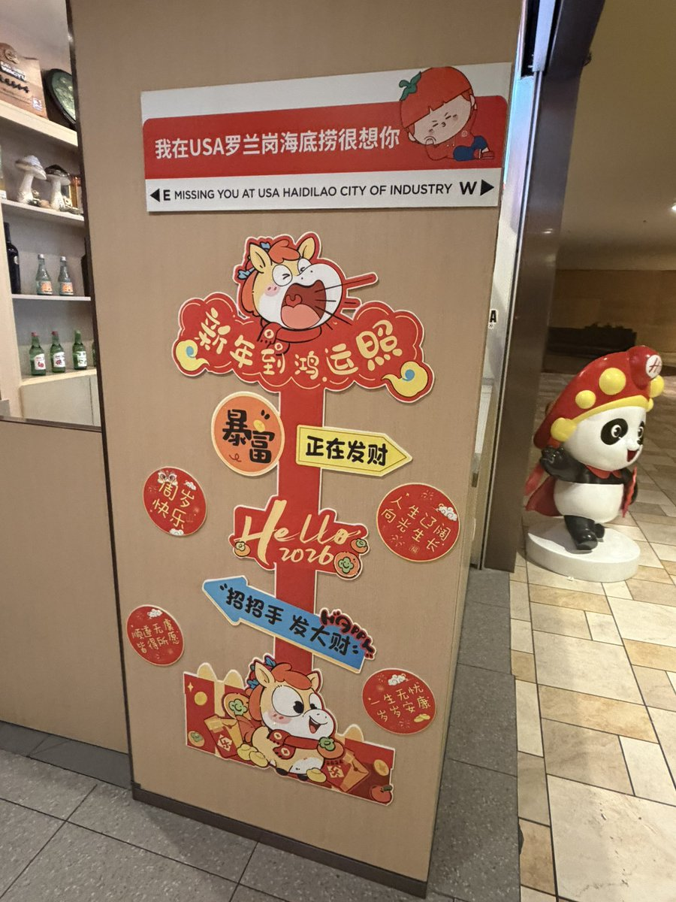

店员说 Industry 的海底捞店面所在租约到明年5月 届时估计要撤店（因为现在的房东说要把center给推了，直接远走高飞😡..虽然那里还有俩知名老店在那里有很大的租约，一家是Round 1，一家是AMC，也是俩神店铺） Arcadia 那家也会一并撤（虽然原本是打算装修的，因为那家十多年了，要翻修） 然后在Pasadena继续开一家（明年10月） 但是又因为Arcadia和Pasadena离得太近了 所以Arcadia这家就崩了，直接去Pasadena和你Industry老师合并啊🤓🤓
真是没想到人生中第一次吃海底捞居然是在美国加州💀
真是没想到人生中第一次吃海底捞居然是在美国加州💀



